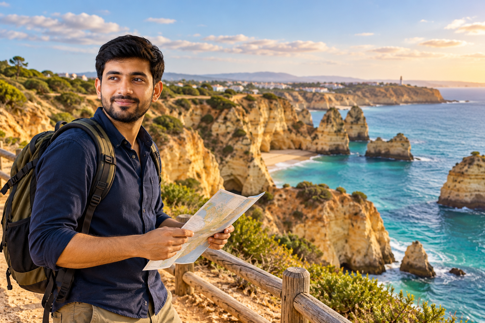
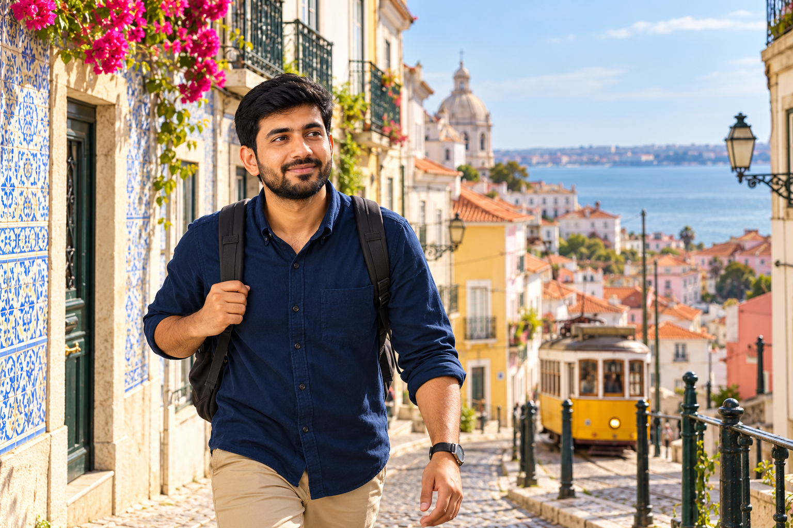
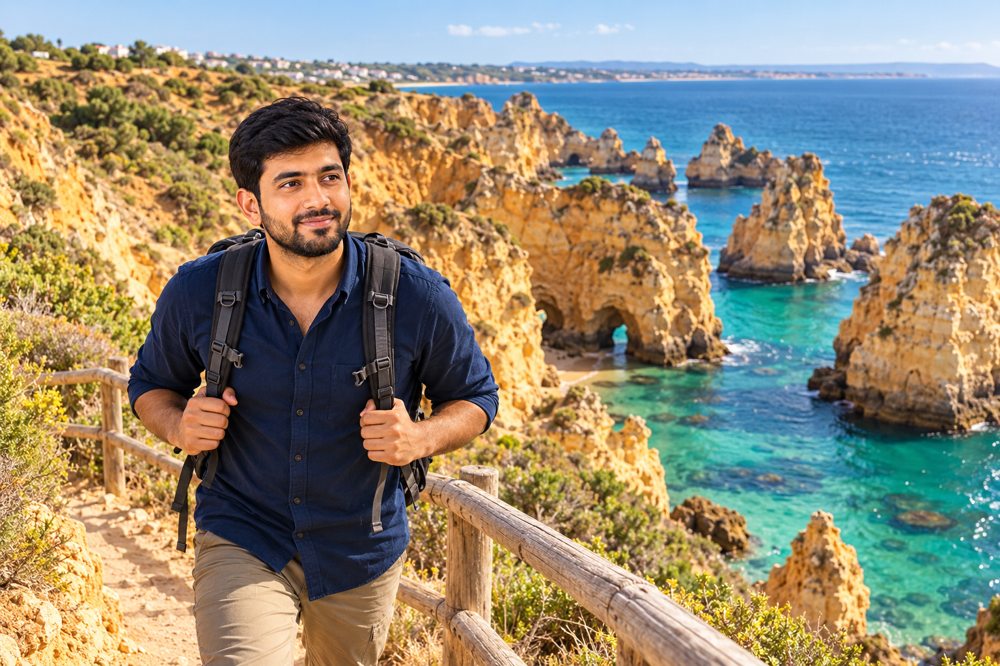

Portugal 10-Day Itinerary for First-Time Visitors
Ten days changes what is realistic on a first Portugal trip. You no longer have to choose only between Lisbon and Porto, but you still do not have enough time to stop everywhere that looks interesting on a map. Adding Coimbra, Évora, Cascais, several Algarve towns, and multiple one-night stays can turn those extra days into more packing and transport instead of a better trip.
When I build a 10-day Portugal itinerary for RoamPlans, I use three main bases: Porto, Lisbon, and the Algarve. The Douro Valley becomes a day trip from Porto, while Sintra stays attached to Lisbon. This gives you cities, palaces, wine country, river scenery, and the Atlantic coast with only two major hotel changes.
Best 10-Day Portugal Itinerary at a Glance

This plan assumes 10 usable days and 9 nights.
If your international flight removes most of Day 1 or Day 10, reduce optional sightseeing rather than cutting time from the main destinations.
Why Start in Porto and Finish in the Algarve?
For this version, the route moves broadly from north to south:
Porto → Lisbon → Algarve
That is cleaner than starting in Lisbon, traveling north to Porto, and then making a long trip back south for the Algarve.
It also gives the trip a natural change in pace.
You begin with:
- Porto and the Douro
- Then move into:
- Lisbon and Sintra
- And finish with:
- the Algarve coast
The final days become slower after a city-heavy first week.
Can You Reverse the Route?
Yes.
If flights work better, use:
Algarve → Lisbon → Porto
The experiences stay almost the same.
The main point is to keep the three bases in a logical order rather than crossing Portugal several times.
Do not choose the direction until you compare your actual flight options.
Why the Algarve Fits a 10-Day Trip but Not the Shorter Routes
The Algarve becomes realistic because 10 days gives you enough room for a third base.
On a five-day itinerary, southern Portugal would take too much time away from Lisbon and Porto.
On a seven-day itinerary, adding it would make the trip faster than I would recommend for most first-time visitors.
With 10 days, you can give the Algarve:
- Arrival afternoon
- Two useful coastal days
- Final morning
That makes the long transfer worthwhile.
Why There Are Still Only Three Hotel Bases?
Ten days does not mean you should stay in six places.
This route uses:
- Porto: 3 nights
- Lisbon: 3 nights
- Algarve: 3 nights
The Douro Valley and Sintra do not require hotel changes.
That keeps your time focused on destinations rather than accommodation logistics.
What This Itinerary Intentionally Leaves Out?
Portugal has many places that could fit between these regions.
They are still excluded for a reason.
Coimbra
Coimbra sits conveniently between Porto and Lisbon, but adding it would turn Day 4 into a luggage-storage sightseeing day.
For a first 10-day route, I would rather give Porto and Lisbon full attention.
Évora
Évora is a strong option for a longer trip, but it adds another direction from Lisbon.
It is easier to include when you have more than 10 days or when the Algarve is not part of the route.
Cascais
Cascais is easy to reach from Lisbon, but you already have a full Sintra day and several coastal days coming in the Algarve.
It does not need to be squeezed into this itinerary.
Óbidos
Óbidos can work on other Portugal routes, but it would create another stop without replacing one of the five main experiences in this plan.
The goal is not to collect destinations.
It is to give each selected place enough time.
How This Page Differs from the 7-Day Portugal Itinerary?
The 10-day itinerary owns a different search intent.
The seven-day route focuses on:
- Lisbon + Sintra + Porto + Douro Valley
- The 10-day route adds:
- a proper Algarve stay
That means the new days are not filler.
They create a third part of the trip with:
- Atlantic beaches
- Limestone cliffs
- Coastal towns
- Boat or walking experiences
- Slower pacing
This is the main reason to choose 10 days instead of seven.
Do You Need a Rental Car?
Not for the whole trip.
Porto and Lisbon work well without one.
The main long-distance sections can also be done by train.
The Algarve is where the decision becomes more personal.
Skip the Car If You:
- Stay in a well-connected town
- Mainly want one or two beaches
- Prefer organized coastal tours
- Do not want to drive abroad
Consider a Short Algarve Rental If You:
- Want several beaches in different areas
- Plan to explore smaller coastal stops
- Prefer independent scenic drives
- Are comfortable with local driving and parking
A useful compromise is renting a car only after reaching the Algarve rather than keeping one through Porto and Lisbon.
Best Hotel Split for 10 Days
Porto: 3 Nights
This gives you:
- Arrival day
- One complete Porto day
- One Douro Valley day
You leave for Lisbon on Day 4.
Lisbon: 3 Nights
This gives you:
- Arrival afternoon from Porto
- One complete Lisbon day
- One Sintra day
You head south on Day 7.
Algarve: 3 Nights
This gives you:
- Arrival afternoon
- Two coastal days
- Final morning before departure
This is enough time for the Algarve to feel like a destination rather than a quick beach stop.
Which Algarve Base Should You Use?
Do not choose a hotel simply because it says “Algarve.”
The Algarve is a region, not one town.
For this specific itinerary, Lagos is a strong first-time base if your priority is dramatic coastal scenery.
It gives you access to:
- Ponta da Piedade
- Beaches
- Historic center
- Boat trips
- Coastal walks
- West Algarve options
Other bases can work better for different travelers.
Choose Faro If:
- Airport access matters most
- You prefer easier transport connections
- Your trip is less beach-focused
Choose Albufeira If:
- Nightlife matters
- You want a busy resort atmosphere
- Central Algarve access is useful
Choose Tavira If:
- You prefer a quieter eastern Algarve experience
- Historic atmosphere matters more than famous west-coast cliffs
For the route in this article, I will use Lagos as the example base.
Best Flight Setup
A useful setup is:
- Arrive in Porto
- Depart from Faro
This minimizes backtracking if suitable flights are available.
For U.S. travelers, those flights may involve connections.
Another practical setup is:
- Arrive Porto
- Travel through Lisbon and Algarve
- Return to Lisbon for the international flight
That adds travel at the end, so the flight time needs to be considered carefully.
Do not book the itinerary first and force the flights around it.
Compare the full route.
Day 1: Arrive in Porto and Start by the River
Day 1 should introduce Porto without becoming a full sightseeing marathon.
If you arrive after a transatlantic flight, your energy may be lower than expected.
Use a compact route through the historic center and finish near the Douro.
A practical order is:
Aliados → São Bento → Cathedral area → Ribeira
Leave Your Luggage First
Go to your accommodation before sightseeing.
If the room is not ready, ask about luggage storage.
Porto's hills and cobbled streets make large bags especially inconvenient.
Once the luggage is handled, start exploring.
Begin Around Avenida dos Aliados
Aliados gives you a central starting point and helps you understand the layout of Porto.
You do not need to spend a long time here.
Use it as the beginning of the walk toward the river.
Stop at São Bento Station
São Bento is an easy first-day stop because it sits naturally on the route.
Its entrance hall is known for large blue-and-white tile panels.
You can appreciate the interior without turning it into a long visit.
Then continue toward the cathedral area.
Continue Toward Porto Cathedral
The cathedral sits above the lower historic center.
From this area, you begin to see how Porto slopes down toward the Douro.
If your energy is good, spend some time around the cathedral.
If you are tired, keep the visit shorter and continue downhill.
Walk Through the Historic Streets
Take your time moving toward Ribeira.
This is a good first introduction to:
- Narrow streets
- Historic buildings
- Small squares
- Churches
- Local businesses
- River views
Do not try to enter every attraction.
You have a full Porto day tomorrow.
Finish at Ribeira
Ribeira is the best place to slow down on Day 1.
Walk beside the Douro and take in the view across to Vila Nova de Gaia.
Your first evening can stay here.
Choose:
- Riverfront walk
- Dinner
- Café
- Early return to the hotel
There is no need for another major attraction after an international travel day.
Day 1 Summary
| Part of Day | Plan |
|---|---|
| Arrival | Airport → accommodation |
| First walk | Aliados |
| Next | São Bento |
| Later | Cathedral + historic streets |
| Late afternoon | Ribeira |
| Evening | Dinner + riverfront |
| Sleep | Porto |
Day 2: Full Porto Sightseeing Day
Day 2 gives Porto the time it does not receive on many rushed Portugal itineraries.
You already saw the riverfront yesterday, so today should focus on the upper historic center before returning toward Gaia later.
A useful route is:
Bolhão → Santa Catarina → Clérigos → Carmo → Gaia
Morning: Start at Bolhão
Begin around Mercado do Bolhão.
This gives you a different side of Porto from yesterday.
You can use the morning for:
- Market browsing
- Coffee
- Breakfast
- Regional products
- Local food
Do not turn the market into a long scheduled tour unless food is one of your main interests.
Continue Along Rua de Santa Catarina
Walk through the Santa Catarina area.
This section combines shopping streets, tiled architecture, cafés, and active city life.
It connects naturally with the rest of your morning.
Stop at Capela das Almas
The tiled exterior makes this an easy visual stop.
You do not need to build the day around it.
Spend a few minutes here and continue.
Move Toward Clérigos
Clérigos gives you one of the day's main decisions.
Climb the Tower
Choose this if:
- You like high viewpoints
- Stairs are manageable
- You want a broad city panorama
Skip the Climb
Choose this if:
- You are tired from hills
- Viewpoints are not a priority
- You prefer more time elsewhere
You will see Porto from several elevated areas during the trip, so this is optional.
Decide Whether Livraria Lello Matters to You
Livraria Lello is popular for its historic interior.
It can also take time from the day.
Include it if:
- Bookstores interest you
- Architecture is a priority
- You specifically want to see the interior
Skip it if you are visiting only because it appears on most Porto lists.
Ten days gives you more travel time overall, but that does not mean every famous attraction becomes necessary.
Explore the Carmo Area
Continue toward the Carmo churches and surrounding streets.
This gives you another historic section without a long transport ride.
Keep some time open for simply walking.
Porto works well when you stop treating every interesting building as a separate appointment.
Lunch in Central Porto
Day 2 is a good time to try a Porto specialty.
You may choose:
- Francesinha
- Cod
- Seafood
- Petiscos
- Another regional dish
If you choose francesinha, keep in mind that it can be a heavy meal.
Your afternoon can be slower afterward.
Afternoon: Cross Into Vila Nova de Gaia
Use the afternoon to focus on the opposite side of the Douro.
Gaia is closely connected with Porto's port wine history.
This section gives you a choice between a structured wine experience and a more flexible riverfront afternoon.
Option 1: Visit One Port Cellar
If wine interests you, choose one cellar experience.
A good visit can introduce:
- Port styles
- Aging
- Production
- Douro connection
- Tasting
One cellar is enough for this itinerary.
Tomorrow is already dedicated to the Douro Valley, so there is no need to make Day 2 another full wine day.
Option 2: Explore Gaia Without a Tasting
You can still enjoy:
- Riverfront
- Porto views
- Dom Luís I Bridge
- Cafés
- Elevated viewpoints
This works well for travelers who do not drink alcohol or prefer an open schedule.
End Near the Douro
Finish the afternoon or evening near the river.
If the weather is good, this is an easy place to stay until dinner.
You have already covered Porto's main city areas over two days.
Tomorrow moves into the countryside.
Day 2 Summary
| Part of Day | Plan |
|---|---|
| Morning | Bolhão |
| Late morning | Santa Catarina + Clérigos |
| Midday | Carmo area |
| Lunch | Central Porto |
| Afternoon | Gaia |
| Evening | Douro riverfront |
| Sleep | Porto |
Day 3: Douro Valley Day Trip
Day 3 gives the itinerary its first major regional change.
You leave Porto's streets behind for:
- Terraced vineyards
- Douro River views
- Wine estates
- Smaller settlements
- Rural scenery
Do not treat the Douro Valley as a place where you need to see every famous viewpoint.
One well-planned day is enough to give you a strong first experience.
Best Day 3 Structure
A balanced day could look like:
| Part of Day | Plan |
|---|---|
| Early morning | Leave Porto |
| Morning | Scenic travel into the valley |
| Late morning | One wine estate |
| Lunch | Regional meal |
| Afternoon | Pinhão + river experience |
| Late afternoon | Return journey |
| Evening | Easy Porto dinner |
| Sleep | Porto |
Tour or Independent Travel?
For this itinerary, choose based on the type of day you want.
Organized Day Trip
Works well if you want:
- Transport handled for you
- Winery visit
- Lunch
- Several scenic stops
- Less planning
Independent Trip
Works well if you prefer:
- More control
- Scenic train travel
- More time in one location
- Fewer scheduled activities
For a first-time visitor with only one Douro day, both are realistic.
If You Travel Independently, Keep the Plan Simple
Pinhão works well as the main focus.
You can build the day around:
- Scenic journey
- Pinhão
- One wine experience
- Lunch
- Riverfront
- Short cruise if desired
Do not try to combine several distant wine estates using public transport.
One Winery Is Enough
The Douro Valley does not become more meaningful because you visit three tasting rooms in one day.
Choose one experience where you have time to learn about:
- Vineyards
- Regional wine
- Port production
- Landscape
- Local history
Then leave room for the valley itself.
Make Lunch Part of the Experience
Do not treat lunch as wasted sightseeing time.
A regional meal belongs naturally in a Douro day.
This is one of the days where slowing down improves the itinerary.
Add a Short River Experience if It Fits
A boat trip can give you a different view of the terraced slopes.
Keep it optional.
If your winery, lunch, and transport already fill the day, you do not need another activity simply because it is available.
Return to Porto for the Final Night
Do not schedule another major Porto attraction after returning.
Use the evening for:
- Dinner
- Packing
- Short walk
- Early rest
Tomorrow you leave northern Portugal and begin the Lisbon section of the trip.
Day 4: Porto to Lisbon
Day 4 moves the trip from northern Portugal to the capital.
Do not try to turn the transfer into another city stop. A direct Porto-to-Lisbon move gives you enough time to reach Lisbon, settle in, and still enjoy a useful afternoon.
A good Day 4 flow is:
Porto → Lisbon → Baixa → Praça do Comércio → Chiado
Day 4 at a Glance
| Part of Day | Plan |
|---|---|
| Morning | Porto → Lisbon by train |
| Around midday | Arrive and check in |
| Early afternoon | Lunch + Baixa |
| Afternoon | Praça do Comércio |
| Later | Chiado |
| Evening | Dinner + relaxed central walk |
| Sleep | Lisbon |
Take a Morning Train
Leave Porto after breakfast.
A morning departure gives you enough time to reach Lisbon without using the entire day for transport.
Long-distance trains normally connect Porto Campanhã with major Lisbon stations.
Your exact arrival point depends on the service you book.
Check the ticket before departure rather than assuming every train uses the same station.
Do Not Add Coimbra Today
Coimbra lies between Porto and Lisbon, so it may look like an easy extra stop.
For this itinerary, skip it.
You already have:
- Porto
- Douro Valley
- Lisbon
- Sintra
- Algarve
Adding Coimbra would turn Day 4 into another luggage-management day.
The extra destination is not worth reducing your first Lisbon afternoon.
Settle Into Lisbon Before Sightseeing

Go to your accommodation first.
Once your luggage is handled, have lunch and begin with the center.
There is no need to rush straight to Alfama or Belém.
Those areas have dedicated time tomorrow.
Start in Baixa
Baixa works well on transfer day because it is central and easy to explore at a flexible pace.
Walk through the main streets and squares while getting familiar with Lisbon.
Notice how your hotel connects with:
- Metro stations
- Riverfront
- Chiado
- Tomorrow's route
This saves time later because the city begins to feel less unfamiliar.
Continue to Praça do Comércio
Walk toward the Tagus River.
The large square and waterfront create a good first view of Lisbon.
Take some time here rather than adding another indoor attraction.
Day 4 already contains several hours of travel.
Spend the Late Afternoon in Chiado
Move toward Chiado after the riverfront.
This area works well for:
- Cafés
- Shops
- Historic streets
- Short walks
- Dinner options
If you still have energy, continue into nearby streets.
If not, stop early.
You have two full Lisbon-area days ahead.
Day 4 Evening
Keep the evening simple.
Choose:
- Dinner
- Short viewpoint stop
- Café
- Easy walk near the hotel
Avoid booking a major experience immediately after the Porto transfer.
Day 4 Summary
| Time | Plan |
|---|---|
| Morning | Porto → Lisbon |
| Midday | Hotel + lunch |
| Afternoon | Baixa |
| Later | Praça do Comércio |
| Late afternoon | Chiado |
| Evening | Dinner |
| Sleep | Lisbon |
Day 5: Full Lisbon Day
Day 5 is your main Lisbon sightseeing day.
Instead of trying to cover every famous neighborhood, divide the day into two clear sections:
- Morning: Alfama and historic Lisbon
- Afternoon: Belém
This gives you the main first-time experiences without crossing the city repeatedly.
Morning: Begin in Alfama
Start earlier today.
Alfama rewards slower walking.
Expect:
- Hills
- Stairs
- Narrow streets
- Old facades
- Small squares
- Viewpoints
Comfortable shoes matter.
Do not judge distances only by what the map shows. A short route can still involve steep streets.
Start Near Lisbon Cathedral
The cathedral area gives you a practical starting point for the historic center.
From here, work gradually uphill.
You can include:
- Cathedral area
- Santa Luzia
- Portas do Sol
- Alfama streets
- São Jorge Castle area
Do not create a strict minute-by-minute route.
Historic Lisbon works better when there is time to stop naturally.
Choose Your Castle Visit Before the Day Starts
São Jorge Castle can take a meaningful part of the morning.
Include it if you care about:
- Medieval history
- Fortifications
- Elevated views
Skip the interior if your priority is neighborhood atmosphere and more time in Belém.
Both versions give you a complete Lisbon day.
Keep Viewpoints Selective
Lisbon has many miradouros.
You do not need to visit all of them.
Choose one or two that sit naturally along your route.
This prevents the morning from becoming a repeated climb for similar views.
Lunch Before Heading to Belém
Take a proper lunch break before moving west.
Do not schedule another major attraction during the meal period.
The afternoon already contains several possible sights.
Afternoon: Belém
Belém gives you another side of Lisbon.
The area is associated with maritime history and some of the city's best-known monuments.
Your main options include:
- Jerónimos Monastery
- Belém Tower
- Monument to the Discoveries
- Riverfront
- Pastel de nata stop
You do not need to enter all of them.
Make Jerónimos the Main Interior Visit
If you want one major interior visit in Belém, make it Jerónimos Monastery.
Then keep the other stops lighter.
This protects your afternoon from turning into a queue-to-queue schedule.
Walk the Belém Riverfront
After the monastery area, spend time near the Tagus.
The riverfront connects several major landmarks.
It also creates a slower part of the day after the hills of Alfama.
Decide on Belém Tower Based on Time
If entry fits easily, include it.
If the line is long, use the exterior as your visit and continue.
You are not losing the value of the day by skipping one interior.
Add a Pastry Stop
Belém is the natural place to include a pastel de nata.
Make it part of the afternoon instead of adding a separate food trip elsewhere.
Evening: Fado or a Simple Dinner
Day 5 is a good night for a fado experience if it matters to you.
If not, use the evening for a good meal and an easy walk.
Tomorrow is a full Sintra day with more hills and timed sightseeing.
Day 5 Summary
| Part of Day | Plan |
|---|---|
| Morning | Alfama |
| Late morning | Castle area + viewpoints |
| Lunch | Lisbon |
| Afternoon | Belém |
| Later | Riverfront + pastry |
| Evening | Dinner or fado |
| Sleep | Lisbon |
Day 6: Sintra Day Trip
Day 6 adds palaces, wooded hills, gardens, and a completely different setting from Lisbon.
For a first visit, keep the day centered on two major attractions:
Pena Palace + Quinta da Regaleira
That is enough for a full day once transport, hills, lunch, and walking are included.
Day 6 at a Glance
| Part of Day | Plan |
|---|---|
| Early morning | Lisbon → Sintra |
| Morning | Pena Palace |
| Midday | Historic center + lunch |
| Afternoon | Quinta da Regaleira |
| Late afternoon | Free time in Sintra |
| Evening | Return to Lisbon |
| Sleep | Lisbon |
Leave Lisbon Early
Sintra is popular and the main attractions are not located beside the railway station.
An early start gives you more control over the day.
The train from Lisbon to Sintra takes roughly 40 minutes, but your total travel time also includes getting to the station and continuing from Sintra station to the main sights.
Do not treat the rail time as the full door-to-door journey.
Visit Pena Palace First
Pena Palace should be the fixed point of the morning.
Its interior uses timed admission.
Build enough space around that time for local transport and the walk through the park area.
Do not book an entry time that depends on every transport connection running perfectly.
Give Pena Palace Proper Time
Around two to three hours is reasonable for many visitors.
That can include:
- Palace
- Terraces
- Exterior
- Park
- Views
If you enjoy gardens and architecture, you may naturally stay longer.
Let your second attraction absorb any delay rather than rushing Pena.
Return Toward the Historic Center
After the palace, move back toward central Sintra.
Have lunch here.
You can also try one of Sintra's local pastries, such as a travesseiro or queijada.
Keep the historic-center section relaxed.
It connects the morning and afternoon rather than functioning as another large attraction.
Afternoon: Quinta da Regaleira
Use the afternoon for Quinta da Regaleira.
The estate feels very different from Pena Palace.
Expect:
- Gardens
- Tunnels
- Grottos
- Towers
- Decorative architecture
- Initiation Well
Allow enough time to wander through the grounds.
This is not a place that works best as a quick photo stop.
Why I Would Not Add Cascais
Cascais is worthwhile, but it has no strong role in this 10-day route.
You are heading to the Algarve tomorrow, where the trip already includes multiple coastal days.
Using part of your Sintra day for Cascais would reduce time at the palaces while repeating the coastal element that comes later.
Keep Day 6 about Sintra.
Alternative Second Attraction
If gardens do not interest you, replace Quinta da Regaleira with the Moorish Castle.
Choose it for:
- Walls
- Views
- Medieval history
- Outdoor walking
It is more physically demanding.
Do not try to include all three major attractions unless you knowingly prefer a faster day.
Return to Lisbon and Pack
Return in the early evening.
Tonight has one practical job:
prepare for the Algarve transfer.
Keep dinner close to your accommodation and organize your luggage before sleeping.
Tomorrow begins the final section of the itinerary.
Day 7: Lisbon to the Algarve
Day 7 moves from Lisbon to the coast.
For this route, Lagos becomes the Algarve base.
The goal today is not to arrive and immediately begin a full beach itinerary.
Use the transfer day to settle in, understand Lagos, and enjoy your first coastal evening.
Day 7 at a Glance
| Part of Day | Plan |
|---|---|
| Morning | Lisbon → Algarve |
| Early afternoon | Reach Lagos + check in |
| Afternoon | Lagos historic center |
| Later | Nearby waterfront or beach |
| Evening | Dinner in Lagos |
| Sleep | Lagos |
Choose Train or Bus Based on Your Schedule
Both rail and coach travel can work between Lisbon and the Algarve.
For Lagos by rail, the route normally uses the southbound long-distance line and then the Algarve regional connection.
Current rail schedules link Lisbon with the Algarve network through Tunes, where regional services continue toward Lagos.
Check the exact connection for your travel date.
Why Lagos Is the Base

For this itinerary, Lagos gives you a practical mix of:
- Historic center
- Beaches
- Ponta da Piedade
- Boat trips
- Coastal walking
- West Algarve access
You do not need to sleep in a different Algarve town every night.
One base is enough for three nights.
Do You Need a Car Today?
Not necessarily.
If you plan to use Lagos itself plus an organized boat trip and nearby beaches, you may not need one.
If Days 8 and 9 include several remote beaches or west-coast stops, picking up a rental car in the Algarve can make sense.
Decide based on the actual places you plan to visit, not because road trips are popular.
Arrive and Settle In
Once you reach Lagos, check into your hotel or leave your luggage.
Do not start by racing toward Ponta da Piedade.
That is tomorrow's main coastal experience.
Use Day 7 to learn the town.
Explore Lagos Historic Center
Spend the afternoon walking through central Lagos.
Look for:
- Pedestrian streets
- Small squares
- Historic buildings
- Cafés
- Restaurants
- Local shops
The pace should feel different from Lisbon.
You have entered the slower final section of the trip.
Add One Easy Waterfront Stop
If time and weather are good, walk toward the waterfront or a nearby beach.
Do not try to visit several beaches.
Choose one easy stop and enjoy the remaining daylight.
Save Ponta da Piedade for Day 8
Ponta da Piedade deserves better timing than a rushed arrival-day visit.
Day 8 will give you enough room for:
- Coastal views
- Walking
- Boat or kayak option
- Beach time
Saving it also prevents Day 7 from becoming another overloaded transfer day.
Dinner in Lagos
Have dinner in the historic center or close to the waterfront.
This is a good night for:
- Seafood
- Grilled fish
- Casual Portuguese food
Keep the evening open.
The Algarve section should begin with less scheduling than Lisbon and Porto.
Day 7 Summary
| Part of Day | Plan |
|---|---|
| Morning | Leave Lisbon |
| Early afternoon | Arrive Lagos |
| Afternoon | Historic center |
| Later | Waterfront or nearby beach |
| Evening | Dinner |
| Sleep | Lagos |
Where the Trip Stands After Day 7
By tonight, you have completed:
- Porto
- Douro Valley
- Lisbon
- Sintra
The final three days now focus on the Algarve.
That separation is deliberate.
Instead of mixing beach stops into Lisbon or squeezing Cascais into Sintra day, the itinerary gives the coast its own section.
Days 8 and 9 can therefore focus properly on Lagos, Ponta da Piedade, beaches, coastal scenery, and one optional wider Algarve experience, while Day 10 remains flexible around departure.
Day 8: Ponta da Piedade and the Lagos Coast
Day 8 is your first complete Algarve day.
Yesterday introduced you to Lagos. Today should focus on the coastal scenery that makes this part of southern Portugal worth adding to a 10-day itinerary.
The strongest plan is:
Ponta da Piedade → coastal walk or boat experience → one or two Lagos beaches → relaxed evening
Do not spend the day driving between distant Algarve towns.
Day 8 at a Glance
| Part of Day | Plan |
|---|---|
| Morning | Ponta da Piedade |
| Late morning | Coastal walk or boat trip |
| Lunch | Lagos |
| Afternoon | Praia do Camilo or Dona Ana |
| Late afternoon | Free beach time |
| Evening | Lagos |
| Sleep | Lagos |
Start at Ponta da Piedade
Make Ponta da Piedade your main morning experience.
The coastline here is known for:
- Golden rock formations
- Sea arches
- Cliffs
- Grottos
- Atlantic views
Arriving earlier also gives you more freedom to decide whether you want to experience the area from land, sea, or both.
Option 1: Explore From Land
Choose the land-based option if you prefer:
- Coastal views
- Walking
- Photography
- A flexible schedule
The clifftop area lets you see the shape of the coast from above.
Take your time.
There is no reason to race through the viewpoints.
Option 2: Take a Boat Trip
A boat trip gives you a different perspective.
From the water, you can see:
- Rock formations
- Sea caves
- Narrow passages
- Cliffs from below
Choose this if seeing the coastline from the sea is one of your main Algarve priorities.
You do not need both a long boat trip and several other structured activities on the same day.
What About Kayaking?
Kayaking can suit active travelers who want more involvement than a normal boat ride.
Choose it only if:
- You are comfortable on the water
- Weather and sea conditions are suitable
- You want a more physical experience
Do not choose an activity only because it photographs well.
Pick the one you will actually enjoy.
Leave Time for the Coastal Walk
Even if you take a boat trip, keep some time for the cliffs from land.
The land and water perspectives are different.
This is one place where slowing down gives you more value than adding another town.
Choose One or Two Beaches
After Ponta da Piedade, use the afternoon for beach time.
Good Lagos-area choices include:
- Praia do Camilo
- Praia Dona Ana
- Porto de Mós
- Meia Praia
You do not need all four.
Choose based on:
- Location
- Weather
- Swimming plans
- Energy
- How long you want to stay
Praia do Camilo
Praia do Camilo is a natural choice if you are already near Ponta da Piedade.
It is known for its cliff setting and smaller sandy areas.
Access includes a long staircase.
Keep that in mind when deciding whether it fits your mobility and energy.
Praia Dona Ana
Dona Ana is another useful Lagos option.
It fits well if you want another beach framed by the area's golden rock formations without traveling far from town.
Porto de Mós
Choose Porto de Mós if you prefer a broader beach and want more space than some of the smaller cliff-backed coves.
It can also work well for a slower afternoon.
Meia Praia
Meia Praia offers a long stretch of sand on the opposite side of Lagos.
Choose it if you want:
- More open beach space
- A longer walk
- Less emphasis on dramatic cliff formations
Your Day 8 experience does not depend on visiting the most famous beach.
Keep Lunch Easy
Return toward Lagos or eat somewhere convenient to your coastal plan.
After several days of city sightseeing, this should feel like a simpler day.
Do not create a long lunch detour unless the restaurant itself matters to you.
Should You Book Another Algarve Tour Today?
No.
Ponta da Piedade plus beach time is enough.
Save the wider western Algarve for Day 9.
This keeps Day 8 geographically compact and gives you time to actually enjoy the coast.
Day 8 Evening
Return to Lagos for:
- Dinner
- Historic-center walk
- Marina
- Café
- Quiet evening
You have one more full Algarve day tomorrow.
There is no need to turn tonight into another sightseeing block.
Day 9: Sagres and the Western Algarve
Day 9 should show you a different Algarve.
The Lagos coast has sheltered coves and sculpted cliffs.
The area around Sagres feels more open and exposed to the Atlantic.
That contrast makes it worth using your final full day outside Lagos.
A useful route is:
Lagos → Sagres → Sagres Fortress → Cabo de São Vicente → optional beach stop → Lagos
Day 9 at a Glance
| Part of Day | Plan |
|---|---|
| Morning | Lagos → Sagres |
| Late morning | Sagres Fortress |
| Lunch | Sagres |
| Afternoon | Cabo de São Vicente |
| Later | Optional beach or scenic stop |
| Evening | Return to Lagos |
| Sleep | Lagos |
Getting to Sagres
This is one day where having a rental car can be useful.
It gives you more control over:
- Departure time
- Cape stop
- Beaches
- Scenic viewpoints
- Return schedule
If you do not want to drive, use available bus or organized excursion options that fit your dates.
Do not rent a car for the whole 10-day trip just for this one day.
A short Algarve rental can be enough.
Start With Sagres
Sagres has a very different atmosphere from Lagos.
The area is closely tied to Portugal's maritime history and Atlantic navigation.
Do not expect a large resort town full of major attractions.
The appeal comes from:
- History
- Ocean setting
- Cliffs
- Open landscapes
That is exactly why it works after Day 8.
Visit Sagres Fortress
The fortress sits on a dramatic headland.
Give yourself time for:
- Historic setting
- Coastal views
- Walking
- Open Atlantic scenery
This is not simply an indoor monument visit.
The location itself is a major part of the experience.
Have Lunch in Sagres
Stop for lunch before continuing toward the cape.
Seafood can be a natural option here, but choose based on your preference.
The afternoon is lighter than the morning, so there is no need to rush through the meal.
Continue to Cabo de São Vicente
Cabo de São Vicente is one of the western Algarve's best-known coastal points.
The setting feels very different from the smaller coves around Lagos.
Expect:
- Large ocean views
- High cliffs
- Strong sense of open space
- Exposed coastal conditions
This is a place for the setting rather than a long attraction checklist.
Be Ready for Wind
The western coast can feel exposed.
A light layer can be useful even when Lagos feels warm.
Do not judge what to carry only by the temperature at your hotel.
Add One Optional Beach Stop
If you have a car and enough time, you can add one beach or scenic stop on the return.
Do not turn the drive back into a five-stop coastal race.
Choose one.
Your final full day should still feel enjoyable.
Alternative: Skip Sagres and Have a Slow Algarve Day
Not every traveler needs Day 9 to become another road trip.
If your priority is relaxation, keep the day around Lagos.
A slower alternative could be:
late breakfast → beach → lunch → coastal walk → final dinner
This option works especially well if the first eight days have already felt active.
You are not required to see more places simply because another day is available.
Alternative: Explore a Different Algarve Area
If Sagres does not interest you, Day 9 can be used for another regional experience.
Depending on your priorities, that could mean:
- Another coastal town
- Different beach area
- Boat experience
- More time around Lagos
The main rule is to choose one direction.
Do not spend your last full day crossing the Algarve from west to east and back again.
Day 10: Final Algarve Morning and Departure
Day 10 should be controlled by your departure.
Do not treat it as another full sightseeing day unless you genuinely have the time.
Early Flight
If your flight leaves early, Day 9 is your final sightseeing day.
Use Day 10 only for:
- Checkout
- Airport transfer
- Flight
Nothing important should depend on this morning.
Afternoon Flight
You may have enough time for:
- Breakfast
- Short Lagos walk
- Marina
- Coffee
- Final shopping
Stay close to your luggage and transport route.
Evening Flight
A later flight gives you more freedom.
You could use the morning for:
- Beach
- Historic center
- Marina
- Long breakfast
- One final coastal walk
Still avoid an activity with a return time that puts the airport connection at risk.
Which Airport Should You Use?
Your best airport depends on your flight route.
Faro Airport
Faro is the main airport serving the Algarve.
It can work well if you find a suitable onward or international itinerary.
You still need to account for the transfer from Lagos.
Lisbon Airport
Many travelers may find better long-haul options through Lisbon.
If your international flight leaves Lisbon, do not assume you can casually travel from Lagos and catch a tight same-day flight.
Build enough buffer into the final transfer.
Depending on departure time, returning to Lisbon on Day 9 and spending the final night there may be safer.
That changes the final Algarve night, but it can simplify the flight day.
Complete Portugal 10-Day Itinerary
Here is the full route:
This route gives you:
- 3 hotel bases
- 2 major hotel changes
- 1 Douro Valley day
- 1 Sintra day
- 3 Algarve nights
- North, central, and southern Portugal
That is enough geographic variety for a first 10-day visit without making the trip dependent on daily hotel changes.
How Much Time Does Each Region Get?
Porto and Northern Portugal
Three nights cover:
- Porto arrival
- Full city day
- Douro Valley
Lisbon Region
Three nights cover:
- Lisbon arrival afternoon
- Full city day
- Sintra
Algarve
Three nights cover:
- Lagos arrival
- Lagos coast
- Western Algarve
- Departure morning
The trip is divided into three clear sections.
That makes it easier to understand and easier to execute.
What Should You Book in Advance?
Prioritize bookings that affect the structure of the itinerary.
These may include:
- Flights
- Porto hotel
- Lisbon hotel
- Algarve hotel
- Porto–Lisbon train
- Lisbon–Algarve transport
- Pena Palace
- Douro winery or tour
- Ponta da Piedade boat trip if it is a priority
- Algarve rental car if you need a specific vehicle
Normal meals and beach time can stay flexible.
Do You Need to Pre-Book Algarve Beaches?
No.
Beach time should remain one of the most flexible parts of the trip.
Let:
- Weather
- Sea conditions
- Energy
- Crowds
help decide how long you stay.
How to Adjust This 10-Day Itinerary
If Beaches Are Your Main Priority
Take one day from Porto.
Give the Algarve an extra night.
This creates more time for:
- Beaches
- Boat trips
- Coastal towns
- Slower mornings
If Wine Is Not Important
Replace the Douro Valley day with another full Porto day or another northern Portugal experience.
Do not keep a day trip simply because it appears in a standard itinerary.
If You Prefer Cities Over Beaches
Remove one Algarve night.
Use that time for Lisbon or Porto.
You could also add Coimbra, but only if you genuinely want another historic city.
If You Want a Slower Trip
Remove Sagres.
Use Day 9 as a complete rest day around Lagos.
This reduces the number of scheduled travel days without changing hotels.
If You Do Not Want to Drive
Keep Lagos as your base and use:
- Walking
- Local transport
- Organized coastal experiences
Skip remote stops that require complicated connections.
The itinerary still works.
If You Are Traveling With Children
Reduce long walking sections and choose fewer cliff viewpoints.
A family version could prioritize:
- Shorter coastal walks
- Beach time
- Boat trip
- Lagos center
Do not try to reproduce every adult sightseeing stop.
7 Days vs 10 Days in Portugal
The main difference is the Algarve.
7 Days
10 Days
Lisbon
Lisbon
Sintra
Sintra
Porto
Porto
Douro Valley
Douro Valley
No proper southern stay
Algarve included
2 hotel bases
3 hotel bases
City + wine focus
City + wine + coast
Three extra days give you a new region rather than simply more time in the same cities.
That is what makes the 10-day route meaningfully different.
Is 10 Days Enough for Portugal?
Yes, for a first trip with clear priorities.
Ten days lets you experience:
- Porto
- Douro Valley
- Lisbon
- Sintra
- Algarve
without changing hotels every night.
It is not enough for every major Portuguese destination.
That is fine.
A good itinerary should leave places for a future visit.
Frequently Asked Questions About a 10-Day Portugal Itinerary
What is the best itinerary for 10 days in Portugal?
A balanced first-time route is Porto, the Douro Valley, Lisbon, Sintra, and the Algarve using Porto, Lisbon, and Lagos as three main bases.
Can I see Lisbon, Porto and the Algarve in 10 days?
Yes. Ten days gives you enough time to give all three regions useful time if you keep hotel changes limited.
How many nights should I spend in Lisbon on a 10-day trip?
Three nights works well in this route. That covers your arrival from Porto, one full Lisbon day, and one Sintra day.
How many nights should I spend in Porto?
Three nights gives you an arrival day, a complete Porto day, and a Douro Valley day trip.
How many nights should I spend in the Algarve?
Three nights gives you enough time for Lagos, Ponta da Piedade, beaches, and one wider western Algarve day.
Is Lagos a good base for first-time visitors?
Yes, especially if your priority is the western Algarve's cliffs, beaches, Ponta da Piedade, and access toward Sagres.
Can I visit the Algarve without a car?
Yes. Lagos itself can work without a car, and some coastal experiences can be reached through local transport or tours. A car gives more freedom for wider western Algarve exploration.
Should I visit Sagres during a 10-day Portugal trip?
Visit Sagres if you want Atlantic scenery, maritime history, and a different side of the Algarve. Skip it if you prefer to use your final full day for beaches and relaxation.
Can I add Coimbra to this route?
You can, but it creates another stop between Porto and Lisbon. For a first 10-day trip, I would keep the route simpler unless Coimbra is one of your personal priorities.
Should I start in Porto or Lisbon?
For this north-to-south route, Porto creates a clean progression through Lisbon to the Algarve. Reverse the route if your flights make the opposite direction easier.
Conclusion
When I build a 10-day Portugal itinerary for a first-time visitor, the extra days should open a new part of the country rather than create more rushed city stops. Using Porto, Lisbon, and Lagos as three bases gives the trip a clear north-to-south structure, while the Douro Valley and Sintra add variety without more hotel changes.
The result is a trip with three distinct phases: northern city and wine country, Lisbon and its palace region, then the Algarve coast. That gives you much more of Portugal than the shorter itineraries while keeping the route simple enough to enjoy each place instead of spending the trip constantly moving.